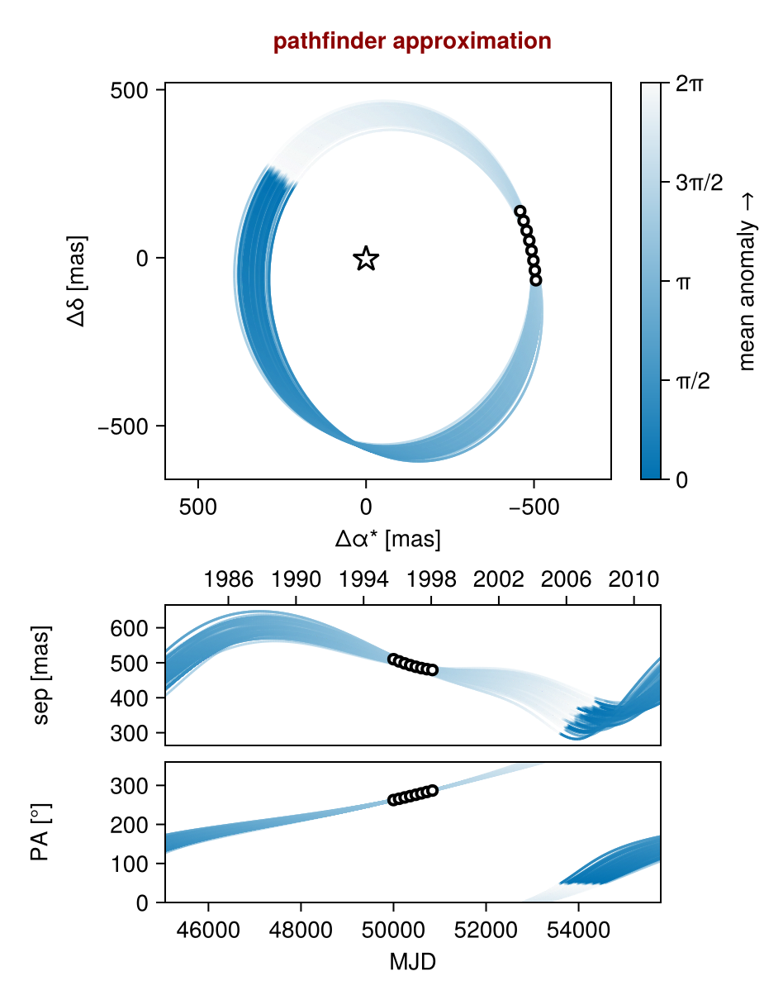
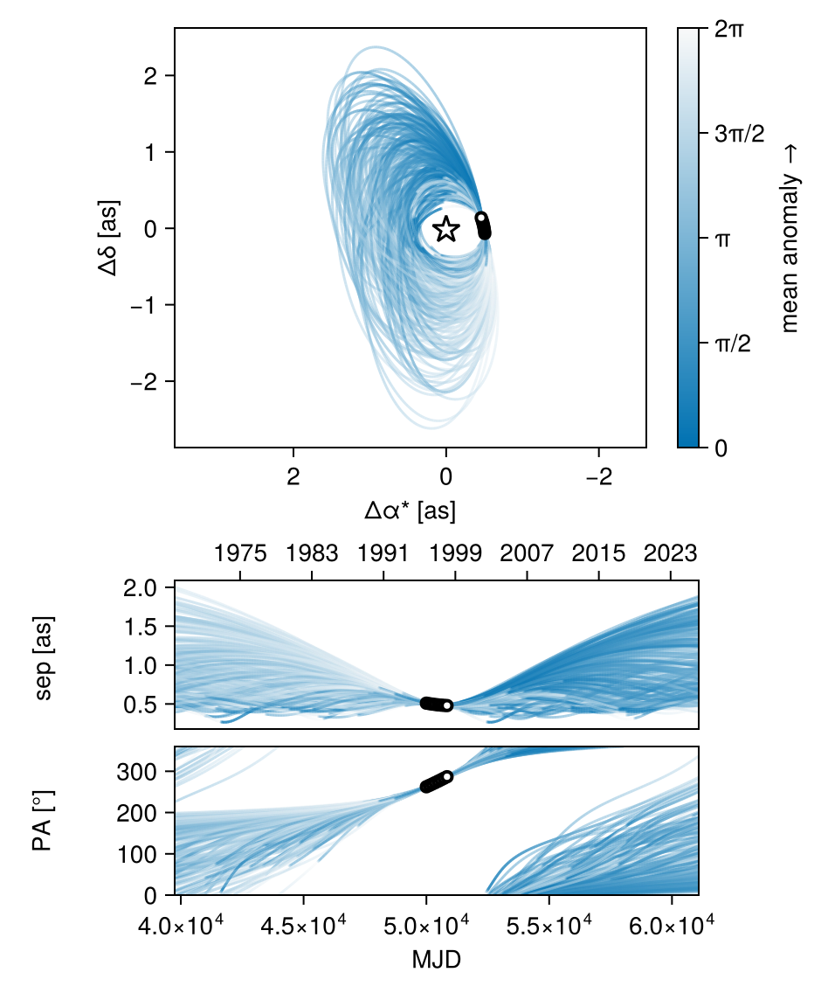
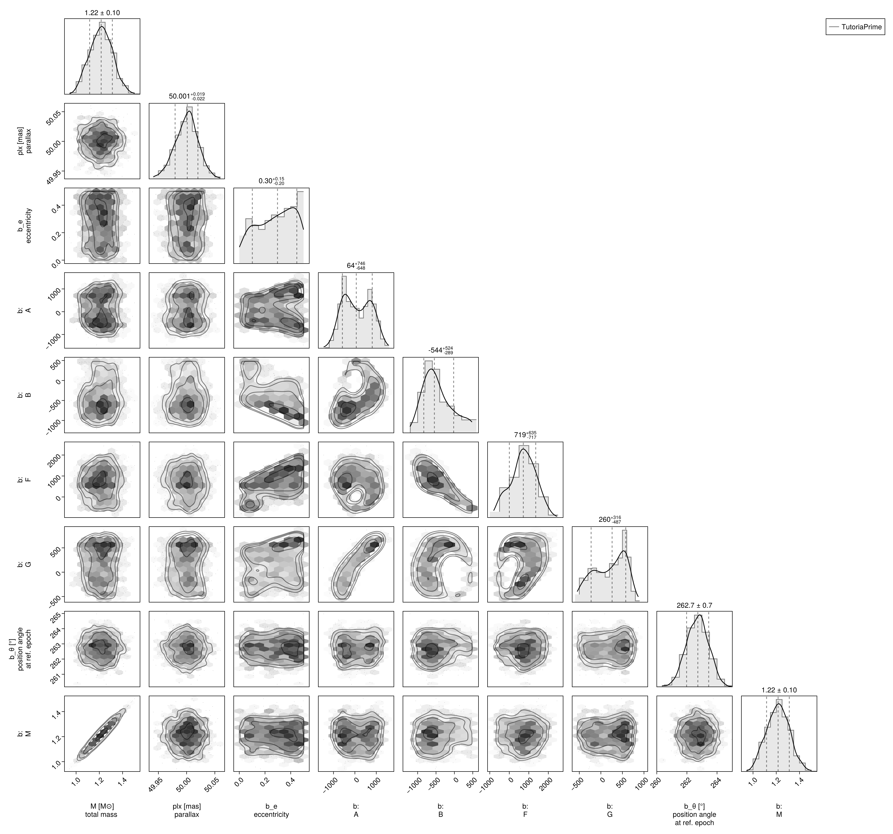
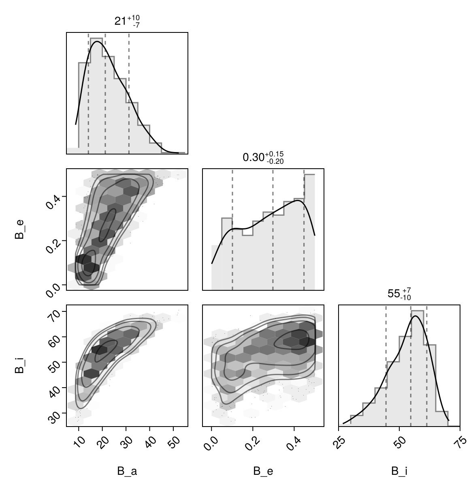

Fit with a Thiele-Innes Basis
This example shows how to fit relative astrometry using a Thiele-Innes orbital basis instead of the traditional Campbell basis used in other tutorials. The Thiele-Innes basis is an alternative parameterization that replaces the angular elements (inclination i, longitude of ascending node Ω, and argument of periastron ω) with the Thiele-Innes constants (A, B, F, G). This avoids the coordinate singularities where ω, Ω, and tp become poorly defined as eccentricity and/or inclination approach zero.
The Thiele-Innes parameterization may be useful when:
- The orbit is nearly circular (e < 0.1) and/or nearly face-on (i near 0° or 180°)
- You want to avoid angular coordinate singularities
Both parameterizations should give consistent results for the physical orbital parameters. Choose based on your preference or specific analysis needs.
At the end, we will convert our results back into the Campbell basis to compare.
using Octofitter
using CairoMakie
using PairPlots
using Distributions
astrom_dat = Table(;
epoch = [50000, 50120, 50240, 50360, 50480, 50600, 50720, 50840],
ra = [-505.7637580573554, -502.570356287689, -498.2089148883798, -492.67768482682357, -485.9770335870402, -478.1095526888573, -469.0801731788123, -458.89628893460525],
dec = [-66.92982418533026, -37.47217527025044, -7.927548139010479, 21.63557115669823, 51.147204404903704, 80.53589069730698, 109.72870493064629, 138.65128697876773],
σ_ra = [10, 10, 10, 10, 10, 10, 10, 10],
σ_dec = [10, 10, 10, 10, 10, 10, 10, 10],
cor = [0, 0, 0, 0, 0, 0, 0, 0]
)
astrom_obs = PlanetRelAstromObs(
astrom_dat,
name = "GPI",
variables = @variables begin
# Fixed values for this example - could be free variables:
jitter = 0 # mas [could use: jitter ~ Uniform(0, 10)]
northangle = 0 # radians [could use: northangle ~ Normal(0, deg2rad(1))]
platescale = 1 # relative [could use: platescale ~ truncated(Normal(1, 0.01), lower=0)]
end
)
planet_b = Planet(
name="b",
basis=ThieleInnesOrbit,
observations=[astrom_obs],
variables=@variables begin
e ~ Uniform(0.0, 0.5)
# Thiele-Innes constants A, B, F, G are in milliarcseconds (not AU like semi-major axis).
# Set the prior width to encompass the expected angular separation of your target.
# A rough guide: if your astrometry spans ~500 mas, use Normal(0, 1000) or similar.
A ~ Normal(0, 1000) # milliarcseconds
B ~ Normal(0, 1000) # milliarcseconds
F ~ Normal(0, 1000) # milliarcseconds
G ~ Normal(0, 1000) # milliarcseconds
M = system.M
θ ~ UniformCircular()
tp = θ_at_epoch_to_tperi(θ, 50000.0; system.plx, M, e, A, B, F, G) # reference epoch for θ. Choose an MJD date near your data.
end
)
sys = System(
name="TutoriaPrime",
companions=[planet_b],
observations=[],
variables=@variables begin
M ~ truncated(Normal(1.2, 0.1), lower=0.1)
plx ~ truncated(Normal(50.0, 0.02), lower=0.1)
end
)
model = Octofitter.LogDensityModel(sys)LogDensityModel for System TutoriaPrime of dimension 9 and 9 epochs with fields .ℓπcallback and .∇ℓπcallback
When using ThieleInnesOrbit, the θ_at_epoch_to_tperi function requires the Thiele-Innes constants A, B, F, G as keyword arguments instead of the Campbell angular elements i, Ω, ω:
# Campbell (Visual{KepOrbit}):
tp = θ_at_epoch_to_tperi(θ, epoch; M, e, a, i, Ω, ω)
# Thiele-Innes:
tp = θ_at_epoch_to_tperi(θ, epoch; system.plx, M, e, A, B, F, G)Note that system.plx (parallax) is also required for Thiele-Innes since the constants are in angular units.
Initialize the starting points, and confirm the data are entered correcly:
init_chain = initialize!(model)
octoplot(model, init_chain)
We now sample from the model as usual:
results = octofit(model)Chains MCMC chain (1000×28×1 Array{Float64, 3}):
Iterations = 1:1:1000
Number of chains = 1
Samples per chain = 1000
Wall duration = 5.67 seconds
Compute duration = 5.67 seconds
parameters = M, plx, b_e, b_A, b_B, b_F, b_G, b_θx, b_θy, b_θ, b_M, b_tp, b_GPI_jitter, b_GPI_northangle, b_GPI_platescale
internals = n_steps, is_accept, acceptance_rate, hamiltonian_energy, hamiltonian_energy_error, max_hamiltonian_energy_error, tree_depth, numerical_error, step_size, nom_step_size, is_adapt, loglike, logpost, tree_depth, numerical_error
Use `describe(chains)` for summary statistics and quantiles.
The Thiele-Innes parameterization may reveal more complex posterior structure (e.g., multimodality) that Campbell masks through its angular parameterization. If your corner plot shows unexpected bimodality in the A, B, F, G parameters, this may reflect genuine orbital ambiguities rather than sampling issues.
We now display the results:
octoplot(model,results)
octocorner(model, results, small=false)
Conversion back to Campbell Elements
To convert our chain into the more familiar Campbell parameterization, we have to do a few steps. We start by turning the chain table into a an array of orbit objects, and then convert their type:
orbits_ti = Octofitter.construct_elements(model, results, :b, :) # colon means all rows1000-element Vector{ThieleInnesOrbit{Float64}}:
ThieleInnesOrbit{Float64}(0.4688503331072208, -36770.108740080716, 1.1797543713143814, 50.01239895908055, 666.9682965145815, -753.6615348799309, 1908.4902505165967, 612.7061078316926, -35.82329801586273, 9.052514689522996, 88568.6376723253, 0.02591135523544846, 1.662954307173408)
ThieleInnesOrbit{Float64}(0.2620459376868422, 5023.556937040048, 1.2068349602655521, 49.97855665502756, 135.71670877881922, -633.6336237169314, 1268.4171379429465, 396.8618342919407, -23.2575748200125, -1.3653647444806905, 45684.598608680535, 0.05023429127844593, 1.3077445467783928)
ThieleInnesOrbit{Float64}(0.3392243824307306, 49123.74839272075, 0.989283435470142, 49.9797068311638, -423.48669795865203, -745.3816826387787, 1020.9695219885444, -101.37494275596585, -14.830747410684724, -9.63117447951979, 39651.914856984826, 0.05787698883457788, 1.423638319415099)
ThieleInnesOrbit{Float64}(0.21015991037007478, 49240.84254907618, 1.0022792861754637, 50.02931715260193, -299.6772540997993, -561.8285646630517, 445.782761109811, -259.4272896707442, 0.648618272510903, -7.491899643695716, 16598.59181847959, 0.13826073070200706, 1.2378037503920096)
ThieleInnesOrbit{Float64}(0.41649466458494544, -4592.231276781502, 1.0438902476997112, 49.999239043691105, 312.27134116553236, -750.5652302700981, 1359.2612882703077, 491.7167816824399, -23.922402520495503, 0.9262366029207001, 55612.52877343427, 0.04126648228489869, 1.5580631487723342)
ThieleInnesOrbit{Float64}(0.4360460811737596, -8248.824387177876, 1.0373414598660047, 49.952559098714126, 436.1420905026566, -744.179756064038, 1402.9275268117856, 526.7821078921937, -24.78807348849707, 3.5544991188460866, 59546.50847880413, 0.03854018467370319, 1.5957409080709797)
ThieleInnesOrbit{Float64}(0.4249910454673482, 49846.55135717229, 1.07334061433818, 50.041201716063384, -181.77132425743105, -897.9009724229046, 1375.9891933441934, 234.7972230870497, -22.571227791749486, -8.155184363936618, 55236.16977015368, 0.04154765696095366, 1.5742320995023227)
ThieleInnesOrbit{Float64}(0.0050236933782762385, 49934.42840131638, 1.3328472432130851, 50.00972520240997, -79.82874011196596, -510.1840851999726, 778.6851834630245, 115.03759564374215, -12.493014221115251, -3.8679155207740696, 20644.336529641696, 0.11116527916274842, 1.0050363757586285)
ThieleInnesOrbit{Float64}(0.011182466301739568, 26345.382729510562, 1.3985955443629987, 49.99619063774432, 394.7467431843138, -350.97767260911365, 824.9590075106188, 421.1148001570703, -15.865106163316986, 4.484687080637694, 25702.287775936747, 0.08928907237572561, 1.0112456951780797)
ThieleInnesOrbit{Float64}(0.040043760496317644, 37291.068969142216, 1.1816578822740589, 50.00393554294262, 578.4925200101186, 12.54017241880883, 175.229433556228, 532.1041532719674, -6.262537140911816, 6.899733185355509, 16036.808135691395, 0.14310412733190703, 1.0408786211741112)
ThieleInnesOrbit{Float64}(0.2834680234437991, 5509.93313421918, 1.2324121526484693, 50.0293135174535, 283.38582495739644, -595.5724603662221, 1249.2866275026304, 482.0596999848216, -23.32192159577608, 1.1465647392688656, 45623.0082497035, 0.05030210679854191, 1.338365516539246)
ThieleInnesOrbit{Float64}(0.17090789518244184, 16999.72695773925, 1.1503698704592213, 50.03537780859798, 385.90590003306176, -508.439133219629, 1012.5715962115407, 308.80000989445216, -17.685021695558568, 5.279516512065747, 34677.253272392765, 0.06617979271369757, 1.1883927056045143)
ThieleInnesOrbit{Float64}(0.14776170670771474, 18001.350227845083, 1.1498726190012423, 50.017732574127464, 61.766657096776385, -563.2872143852351, 1010.9125972333212, 247.0198596103086, -17.53802180400256, -1.7481574920813032, 32496.70012734925, 0.07062050683465938, 1.1605005307126692)
ThieleInnesOrbit{Float64}(0.23427783994689955, 16584.84076676031, 1.1176129817241072, 49.98818351087383, 241.56527832802547, -586.4555287635887, 1022.0734843489972, 324.6754095896768, -17.347777500919875, 1.3031406843775666, 34426.143277277406, 0.0666625190908936, 1.269611530547859)
ThieleInnesOrbit{Float64}(0.35018414912320284, 4699.590594571542, 1.2191039147881435, 50.00088240391215, 151.04426576481148, -713.013472993324, 1296.9264328580782, 340.7885586543926, -22.526923807254864, -0.8361882196922017, 45977.82310834867, 0.049913921066668095, 1.4414558736847842)
ThieleInnesOrbit{Float64}(0.26520064327235227, 14085.695610816001, 1.0488158912091605, 50.00219496959379, -44.21856486440682, -677.9965237514756, 1037.5011226036474, 219.31054813198796, -16.91979578970662, -4.599382181645852, 36054.30653507096, 0.06365213074379902, 1.3121857535924668)
ThieleInnesOrbit{Float64}(0.20388571302100078, 48384.84423197375, 1.2782458253813334, 50.00614767082541, -549.8454617834896, -627.9667651362473, 949.6155785667721, -113.39762405556718, -15.136062528739446, -11.913825263956577, 34553.9034475181, 0.06641603999770919, 1.2297162764696257)
ThieleInnesOrbit{Float64}(0.4737353766820904, 48556.88084335852, 1.1270179962526172, 50.000767218008804, -743.261622713856, -1041.4808640860513, 1248.4239636580412, -3.5341479614507043, -18.82295448548359, -19.63977571485946, 61601.86485741951, 0.037254285057101405, 1.6734304453910154)
ThieleInnesOrbit{Float64}(0.212960325470769, 46793.297546332775, 1.3091713739177036, 49.992384844843116, -783.6922431985736, -374.95248554520936, 181.93601934870068, -478.430585465045, 1.0459314920450395, -14.08050317176614, 23188.896437036306, 0.0989669102916849, 1.2414378577726644)
⋮
ThieleInnesOrbit{Float64}(0.4499375013404356, -7838.0626926185505, 1.3408278777633504, 50.02053253881587, 1048.2012609953133, -396.91790884934966, 1218.394105893358, 831.3214402322295, -24.586281056336542, 15.396853988587871, 60520.0409764216, 0.03792022272987955, 1.6235610456756318)
ThieleInnesOrbit{Float64}(0.3975159767173399, -1877.7352884301436, 1.3049689863722402, 49.98132775198402, 1006.7653266008169, -334.65818202999435, 1099.341637449181, 773.718209408465, -22.410079345949818, 15.144641019301154, 54832.97670734457, 0.04185316156910282, 1.5230200594536887)
ThieleInnesOrbit{Float64}(0.2572792718598168, 11837.80577987738, 1.2196418242074045, 50.03175692609401, 959.8894601864939, -314.3439502693697, 809.6830365115625, 542.7740054339761, -15.124366910593606, 16.022321846372126, 41901.83981383688, 0.05476927609010399, 1.3010773172892447)
ThieleInnesOrbit{Float64}(0.44476000105595337, -7091.016139552543, 1.1056388765120242, 50.03095538514302, 518.5283932014232, -793.2932353032072, 1430.7006475332912, 378.6869656263447, -23.889514665672678, 7.382368442039098, 58477.98777721338, 0.039244398117638225, 1.6130858529405168)
ThieleInnesOrbit{Float64}(0.44738395521647384, 49837.61260736948, 1.2369895101420108, 50.03488783100237, -171.78956475285224, -933.6153983654054, 2002.12549669231, 380.9762095586258, -36.834081091187365, -7.58704092814134, 87586.56807052816, 0.026201887846540272, 1.6183786180331068)
ThieleInnesOrbit{Float64}(0.26564052955899214, 10168.98735840086, 1.2172300716140887, 49.97666924979873, 505.8997579562284, -544.5896295206136, 1135.4410508149833, 404.90232087841264, -20.23900772488481, 7.001217983077795, 41672.13237478637, 0.05507117833105867, 1.3128068583644525)
ThieleInnesOrbit{Float64}(0.2045440059832478, 16536.62417070604, 1.1860644486212764, 49.9759069109951, 476.686806586227, -490.3681921666301, 994.0173716999617, 394.75515723324855, -17.641022390999467, 6.360853145772224, 35380.88709125238, 0.06486364876969822, 1.2305613091816998)
ThieleInnesOrbit{Float64}(0.2813174710930269, 15097.47794405456, 1.2651694624618945, 49.97471612154698, 687.8300285836626, -424.85314652524875, 929.738079112535, 553.1685375906027, -17.194472626490185, 9.419207543022779, 37249.90161679734, 0.06160911395300101, 1.3352415255355405)
ThieleInnesOrbit{Float64}(0.23995566345180533, 32829.151479425454, 1.2146383850548879, 50.01512764910822, 772.6654922021775, -109.13512794872887, 125.04669570339391, 530.7505634652028, 1.3756127082566618, -11.245121944756988, 20543.130915286845, 0.11171293426064892, 1.2772726554734328)
ThieleInnesOrbit{Float64}(0.4329650105503736, 27288.030352124784, 1.173175544842674, 49.99469536093928, 907.6863369720028, 4.3624019285987865, -18.696412101843332, 604.6485579174863, -0.42342621841044187, -13.542665848315691, 26098.729731549385, 0.0879327636652415, 1.5896915433168122)
ThieleInnesOrbit{Float64}(0.39504820853447203, 34841.80839415318, 1.0969258718952044, 50.00708973944166, 631.9801081763112, -126.88743038862603, 2.489927317555283, 602.4205370609506, -4.606168034344394, -6.4995269093364225, 17661.750219928774, 0.12993805284698443, 1.5185679311707603)
ThieleInnesOrbit{Float64}(0.4097983885003787, 35000.221886817715, 1.0896536456072614, 49.98578052611251, 574.0417204825751, -168.0790191715608, 54.15938883076282, 622.9932530283063, -6.071949816560814, -4.852756765872388, 17199.53638860225, 0.13342995890099368, 1.5455330958107862)
ThieleInnesOrbit{Float64}(0.39297866616539856, 36296.46528276602, 1.0901730098774356, 50.00572255601352, 541.4697436587646, -135.08261442198508, 22.72077939902553, 597.4646674428429, -6.1700743205956785, -4.433581568242139, 15930.273048049801, 0.1440611486397775, 1.5148521764811567)
ThieleInnesOrbit{Float64}(0.4452194631781757, 31868.641718256902, 1.085566661934377, 49.99417283768701, 680.7425054364442, -228.6939902267922, 84.84328231982715, 633.8817618938024, -4.42233325785001, -7.889848772575525, 20426.42745305966, 0.1123511900806515, 1.6140102655220545)
ThieleInnesOrbit{Float64}(0.47101410696745344, 20228.708143886175, 1.0734085224834498, 50.014452991382704, 1031.3054200895797, -122.8121244112291, 50.088491768224145, 647.242148137136, -0.68581640516396, -16.223914353161515, 33388.37369112118, 0.06873450784629337, 1.6675788318631193)
ThieleInnesOrbit{Float64}(0.3118416064182935, 14082.253274640883, 1.257096570656376, 50.005378684463956, 699.553329372144, -510.3922783378823, 967.2605889802887, 459.48137996703656, -16.527440011290746, 10.698317657367042, 38155.20893585372, 0.06014731664307148, 1.380691002597965)
ThieleInnesOrbit{Float64}(0.24899607847178534, 43248.286535963976, 1.0755105488915127, 50.00260325007058, 251.15662892324374, 353.92119834457367, -432.1608141307142, 208.14565833434787, -4.960251858803391, -2.811894425013056, 11131.922645261657, 0.206157867475318, 1.2896130968271569)
ThieleInnesOrbit{Float64}(0.12418864504877475, 48594.40894668325, 1.328698330121665, 50.00099926892427, -465.2521204507222, -549.038112488184, 571.5958617281917, -208.4143278303398, -6.1541124717285856, -9.847250761141513, 19624.29481565609, 0.11694348535859063, 1.132959307016922)
ThieleInnesOrbit{Float64}(0.16913131238715468, 48718.46153918156, 1.3312166135964836, 49.99622948954236, -449.86495997771425, -581.8004802770023, 509.0310506517373, -211.59913166211822, -4.021147716973554, -10.534577284608732, 18852.191613983217, 0.12173297834216396, 1.1862205677472135)Here is one of those entries:
display(orbits_ti[1])We can now make a table of results (and visualize them in a corner plot) by querying properties of these objects:
table = (;
B_a = semimajoraxis.(orbits_ti),
B_e = eccentricity.(orbits_ti),
B_i = rad2deg.(inclination.(orbits_ti)),
)
pairplot(table)
We can also convert the orbit objects into Campbell parameters:
orbits_campbell = Visual{KepOrbit}.(orbits_ti)
orbits_campbell[1]KepOrbit{Float64}
─────────────────────────
a [au ] = 41.1
e = 0.46885033
i [° ] = 64.1
ω [° ] = 284.0
Ω [° ] = 11.5
tp [day] = -36800.0
M [M⊙ ] = 1.18
period [yrs ] : 242.5
mean motion [°/yr] : 1.48
──────────────────────────
plx [mas] = 50.0
distance [pc ] : 20.0
──────────────────────────